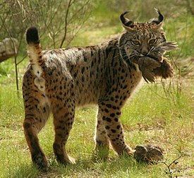
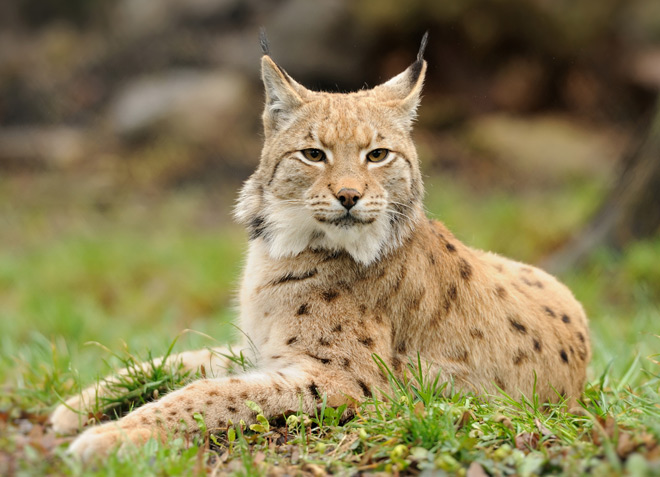
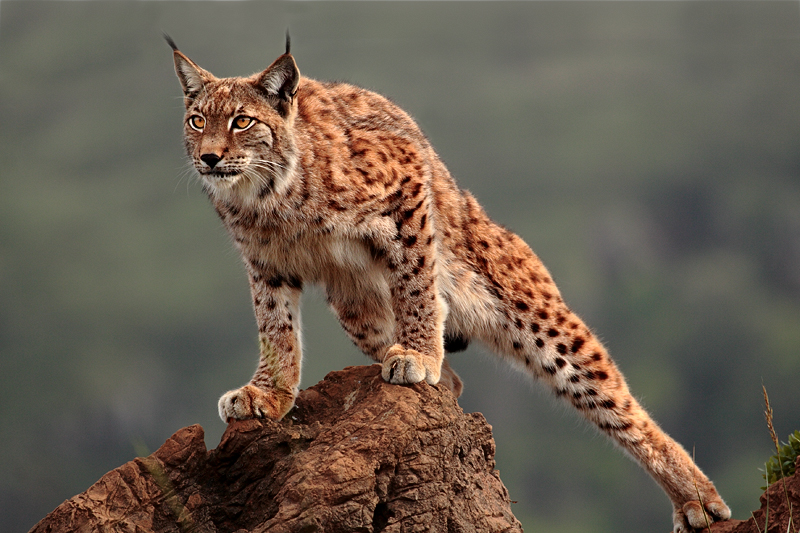

Пиренейская рысь — один из самых редких видов млекопитающих. По оценке на 2005 г. её популяция составляет всего 100 особей. Для сравнения: в начале XX века их насчитывалось около 100 тыс., к 1960 — уже 3 тыс., к 2000 — всего 400. Внесена в Приложение I CITES (Конвенция по международной торговле вымирающими видами дикой фауны и флоры), а также в списки Всемирного союза охраны природы (IUCN), в категорию I (животные, подвергающиеся угрозе исчезновения).
Согласно прогнозу некоторых ученых пиренейская рысь может вымереть уже через 50 лет. Выводы исследователей опубликованы в журнале Nature Climate Change. Причина неминуемой гибели рыси — сокращение популяции дикого кролика, составляющего 80-99 % её рациона. Дикий кролик, в свою очередь, вымирает из-за чрезмерного промысла, миксоматоза (завезённого в 1952 году из Иберии во Францию), и геморрагической лихорадки (завезена в 1980-х), а также из-за сокращения естественной среды обитания, которое обусловлено изменением климата.

Внешний вид
Пиренейская рысь, или испанская рысь, или сардинийская рысь (Lynx pardinus) ранее часто считалась подвидом обыкновенной рыси. На сегодняшний день доказано, что это два разных вида, эволюционировавших независимо друг от друга в эпоху плейстоцена. Пиренейская рысь отличается более светлой окраской и резко выраженными пятнами, придающими её ей сходство с окрасом леопарда. Длина меха у неё немного короче, чем у других рысей, потому что в местах её обитания гораздо более мягкий климат. В зимнее время года шерсть испанской рыси немного тускнеет и становится тоньше, что внешне делает ее менее объемной. Кроме того, пиренейская рысь значительно меньше обыкновенной: ее высота в холке колеблется от 45 до 70 см, длина тела варьирует от 75 до 100 см, длина короткого хвоста 12-30 см. Самцы крупнее самок, их вес в среднем около 13 кг, но встречаются особи весом до 26 кг; самки же в среднем весят около 9,5 кг, это примерно половина от веса обыкновенной рыси.

Характер и образ жизни пиренейской рыси
Кроме сезона размножения иберийская рысь ведет одиночный образ жизни, охраняя свой участок от чужаков. Размеры этого участка колеблются от 10 (у самок) до 18 (у самцов) км2. Границы участка могут изменяться со временем и в зависимости от численности кроликов. Территория самца частично перекрывается с несколькими участками самок, им он разрешает заходить на свою территорию. Границы своей территории метит запаховыми метками, мочой, экскрементами и царапинами на коре деревьев.
В ненастье она прячется в пещерах или в полных деревьях. Рысь хорошо бегает, у неё прекрасно развиты зрение и обоняние – они позволяет рыси обнаруживать добычу на расстоянии до 300 м. В сутки (во время охоты) этот хищник может пройти до семи километров. Охотится рысь обычно из засады - притаившись на ветке дерева, за пнем или скалой, она ждет, когда жертва подойдет достаточно близко, чтобы напасть на нее. Пойманную добычу рысь относит от места убийства на некоторое расстояние и только потом начинает поедать ее. Не съеденную часть оставляет на следующий день.

Размножение
Период размножения рыси длится с января по июль. В течение всего сезона размножения самец может спариться с несколькими самками. Период беременности длится 72-78 дней. Потомство появляется только один раз в год. Пик рождаемости приходится на март-апрель. Готовясь к рождению малышей мать, находит укромное место, в виде полости в стволе пробкового дуба или подходящих зарослей. Обычно в помете бывает три котенка, иногда пять, но выживают не все. Весят новорождённые 200-250 гр. Примерно каждые 20 дней, мать перетаскивает котят в новое логово (больше по размеру). Такое поведение направлено на защиту помета, а также (предположительно) способ избежать сильной зараженности паразитами. Процесс выкармливания молоком длится 5 месяцев, хотя уже через месяц после рождения котята способны есть мясо. Молодёжь становится способной охотиться самостоятельно в 7-9 месяцев, но остаётся с матерью до 20 месяцев, пока не найдут свои охотничьи угодья. Половая зрелость наступает в возрасте 1 года. В дикой природе пиренейская рысь живёт максимум 13 лет.